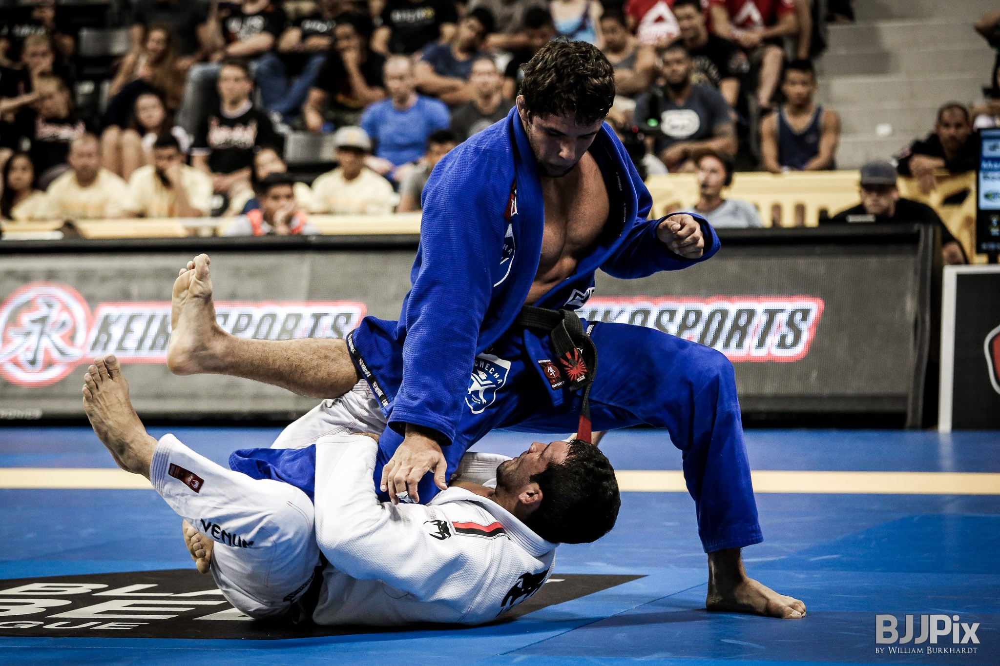

Welcome to my experience with Brazilian Jiu Jitsu!
Practicing Brazilian Jiu Jitsu is something I never would have imagined I'd do, but I'm so glad I stumbled upon the world's deadliest sport. This site shares a little bit about how I got into the sport, what my journey with BJJ has been like, and information about the sport itself. If you're anything like I was, you might have never been interested in sports -- let alone a martial art. But please, keep an open mind! You could end up falling in love with the practice, too.
Gain strength
Make friends
Compete and win
Attain inner peace